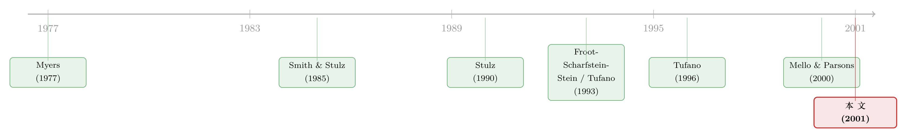

用黄金还债：一家垃圾评级公司，如何把对冲「焊」进了债券里
本文读的是 Chidambaran, Fernando & Spindt (2001, Journal of Financial Economics)：一家被评为垃圾级、股价又低于资产价值的金矿公司 Freeport McMoRan（FCX），靠发行「用黄金计价」的存托凭证，以远低于普通债的成本融到了 3.59 亿美元。表面上看，这等价于「发普通债 + 自己去做空黄金对冲」；作者证明这个等价是假象——把对冲捆进证券里（bundled hedge）远胜于把两件事分开做（conventional hedge），因为它绕开了破产清偿顺序、把信用增级精准地「定向」给了新债持有人，并顺手压住了股东事后拆对冲的冲动。
1 一道几乎无解的融资题
先把场景摆出来。1993 年，FCX 手里攥着印度尼西亚伊里安查亚（Irian Jaya）的 Grasberg 矿——当时世界上最大的单体金矿、也是最大的几个露天铜矿之一。要把它的产能从 9 万吨/日往 11.8 万吨/日推，需要 20 亿美元的资本开支。
可这家公司当时的处境，几乎是教科书级的「融资约束」：
- 股票管理层认为被严重低估（连现有资产都没卖到价），所以不想增发股权；
- 现有的次级债已经被穆迪评到了 B1（垃圾级），再发债只会进一步压低评级；
- 银行又因为印尼的政治风险而神经紧张，不肯给长钱，还附带一堆限制性契约。
钱要得急、路又都堵着。于是一个自然的问题是：一家又穷、评级又差的公司，凭什么能用「优惠成本」借到长钱？
FCX 给出的答案，是一种叫「黄金计价存托凭证」（gold-denominated depositary shares）的东西。说穿了，它就是一张本金和利息全部用黄金支付的债：1993 年 8 月的第一期（Gold Series I），面值 0.1 盎司黄金、年付 0.0035 盎司股息、10 年期，募了 2.21 亿；1994 年 1 月的第二期（Gold Series II）12 年期，募了 1.38 亿。后来还跟着发了一期白银计价的（Silver Series I），募了 0.95 亿。
为什么这么一包装，借钱就便宜了？这正是全文要反复讲透的那一个核心。
2 先看一眼：FCX 到底暴露在什么风险下
要理解后面的机制，得先确认一件事：FCX 的公司价值，和黄金价格是高度正相关的。
作者用一个三因子模型回归了 FCX 的日度股票收益（1990/1/1–1993/7/15，856 个交易日），因子是市场收益、伦敦金价变动、伦敦金属交易所铜价变动：
- 黄金因子系数 0.611（t = 6.35），在 1% 水平显著；
- 铜因子 0.136（t = 2.66），市场因子 0.307；
- 白银不显著——因为白银只是 FCX 金矿的副产品，占收入不到 1%。
记住这个反差：黄金是 FCX 的命脉，白银几乎无关紧要。这个反差，后面会变成整篇论文的「实证标尺」。
3 这张债券，为什么天生信用更好？
接着，一个朴素的直觉是：金矿公司发一张「用黄金还的债」，相当于让负债的价值跟着公司价值一起涨跌。
普通公司发债，债是固定面额的;公司一旦经营恶化、资产缩水，债权人却还是要那么多钱，违约风险陡增。可如果债是用黄金计价的——金价跌、公司也跟着不行的时候，这张债要还的（按美元算）也少了；金价涨、公司红火的时候，要还的才多。负债自动地「让着」公司。
这就是「信用增级」（credit enhancement）的来源：让债券的偿付义务与发行人的资产价值正相关，违约的尾部风险被天然削平了。
到这里为止，故事还很顺。但真正关键的一步在于一个看似无害的反驳——
4 反转：「捆绑对冲」和「常规对冲」真的等价吗？
一个老练的读者立刻会问：这没什么稀奇啊。FCX 完全可以发一张普通的黄金挂钩美元债，然后自己跑去黄金衍生品市场做一笔空头对冲，效果不一样吗？一边是债，一边是对冲，两笔现金流加起来，和那张「捆绑」的存托凭证不是长得一模一样？
作者把前者叫「常规对冲」（conventional hedging：直债 + 另做衍生品），把后者叫「捆绑对冲」（bundled hedging：把内嵌衍生品和融资焊在一张证券里）。表面上的等价，恰恰是本文要击碎的东西。捆绑对冲是远远优于常规对冲的，原因有两个。
4.1 第一重优势：定向风险管理，不给老债主「白送钱」
设想 FCX 用常规对冲：发新债，再单独做一笔黄金空头。这笔对冲降低了整个公司的违约风险——可问题是，公司原本就有一批优先级更高的老债主。违约风险一降，最先受益的是这些老债主的债权价值上升了。新债主想买的「信用增级」，被老债主搭便车搭走了一部分。这是一笔不情愿的财富转移。
而捆绑对冲妙在哪？它内嵌的那笔衍生品，让持有人自己既是债权人、又是对冲的对手方。一旦公司违约，持有人可以拿自己「欠公司的对冲负债」去抵消（net）「公司欠自己的债权」。作者把这个抵消的权利叫「option-to-net」——一个只在违约时才进入价内的期权。
这个抵消动作，等于绕过了公司现有资本结构的优先级：哪怕这张存托凭证名义上是次级的，它也能把信用增级的好处精准地留在自己手里，而不漏给优先债主。作者称之为「定向风险管理」（targeted risk management）。
（关于「对冲到底该不该做、该怎么做」这个更大的题目，可参见《对冲的下半场：不是「要不要」，而是「怎么对冲」》；而企业真实对冲规模有多小，又可参见《公司到底用衍生品对冲了多少风险？》。）
4.2 第二重优势：摁住股东「事后拆对冲」的手
第二个优势，要追到 Smith 和 Stulz (1985) 那个经典难题——时间不一致（time inconsistency）。
他们指出：一家公司为了让新债主放心而做了对冲，可一旦债卖完了，股东就有强烈的事后动机去把对冲拆掉（unwind）。因为对冲保护的是债主，拆掉对冲、把风险加回来，相当于从债主口袋里把钱掏回到股东口袋——这正是经典的「资产替代」（asset substitution，见 Myers, 1977）。债主事前就预见到这一点，于是除非公司能可信地承诺「卖完债也不拆对冲」，否则他们根本不会把信用增级计入定价。可常规对冲偏偏无法可信地预先承诺，于是时间不一致死结难解。
（资产替代这个「债务的原罪」，可顺带参见《债务这副药，为什么不能全吃？——重读 Jensen 和 Meckling 五十年》。）
捆绑对冲怎么破这个局？三层：
- 本来就没给老债主送钱，所以「拆掉对冲再把钱抢回来」这件事的可榨取价值，本身就小得多；
- 拆一个捆绑的对冲，成本极高——拆对冲的新对手方在破产时劣后于现有债主（Tucker, 1991; Foster, 1995），所以它会通过定价和抵押要求，把股东那点剩余榨走一大块；
- 内嵌衍生品的期限长，等于把风险管理锁死了整个债的存续期，外加拆对冲会带来声誉成本。
于是资产替代问题被大幅缓解（虽未完全消除）。
4.3 顺带的第三点：常规对冲连「复制」都做不到
还有一个常被忽略的现实细节。常规对冲要用短期、逐日盯市的黄金期货去复制一张长期内嵌衍生品。可一旦金价中途上涨，空头期货就要不断补缴保证金、还要滚动展期——在最需要钱的时候反而被现金流倒抽一口血。这正是 Mello 和 Parsons (1995) 复盘德国 Metallgesellschaft 巨亏时讲的故事：一个不考虑自身融资需求的对冲，会反过来加剧而非缓解流动性约束。所以复制策略不仅不等价，还是严格次优的。
5 把价格拆成三块：CER 的方法论
讲到这里，故事的逻辑闭环了。但作者还想从市场价格里找出实锤：市场真的为这种信用增级付了钱吗？
他们的办法，是把存托凭证的现金流拆成三块：
这个分解的直觉是：把一张「用黄金还的债」想象成「一张普通债」叠加「一笔把美元换成黄金的互换」，二者用市场价都能定出来；剩下对不上的那一块残差，就是这张证券因为「捆绑」而独有的信用增级价值。
但难点在于：怎么知道那张内嵌直债的「信用质量」是多少？这正是白银派上用场的地方。识别的关键一步是：
- 由于白银对 FCX 几乎无风险敞口（第 2 节那个不显著的白银因子），它的信用增级理应趋近于零；
- 三只证券是同顺位（pari passu）发行的，市场会赋予它们内嵌直债相同的信用质量；
- 于是作者把白银那只的 CER 标定为零，反推出那个让 silver CER = 0 的债券收益率，再用这把「尺子」去量黄金两只。
这是一个很漂亮的「基准归零」识别思路：用一只应该没有效应的近似证券（白银），来校准那把测量效应的尺子，再去量应该有效应的证券（黄金）。它的可信度，整个押在「白银确实近似零敞口、且三只证券信用质量相同」这两个假设上。
结果干净利落：
- Gold Series I 的 CER = 其市值的 3.15%；
- Gold Series II 的 CER = 其市值的 4.68%；
- 白银 = 0（基准）。
如果根本不存在信用增级，或者三只证券的信用增级是一样的，那三个 CER 就该相等。事实并非如此。黄金两只显著为正、白银为零的这个排序，恰好和「黄金是命脉、白银无关紧要」的基本面对得上——市场识别出了 FCX 在黄金和白银之间的这个关键差异。论证闭环。
6 文献脉络
这条研究线，是「公司为什么、以及如何做风险管理」这个大问题的一个精彩注脚。
最早把对冲动机讲清楚的，是 Smith 和 Stulz (1985)——他们指出对冲能降低预期破产成本、缓解债务的代理冲突，也第一个点出了「事后拆对冲」的时间不一致难题。接着，Stulz (1990) 把它放进管理层自由裁量与最优融资政策的框架；Froot, Scharfstein 和 Stein (1993) 则把风险管理重新定义为「协调投资与融资政策」的工具——对冲的意义在于保证公司在坏年景里仍有内部资金去投资。再往后，Mello 和 Parsons (1995, 2000) 把视线拉到对冲的流动性与现金流时点：一个不管自己融资需求的对冲（如 Metallgesellschaft）反而会拖垮公司。
另一条平行的线，是 Tufano (1993, 1996) 对北美金矿业风险管理实践的实证——他记录了 American Barrick 用黄金挂钩融资把对冲与融资合二为一的做法，也展示了金矿企业对冲行为的巨大差异。

本文（2001）正落在这两条线的交汇处：它不只是描述一个 FCX 案例，而是用「捆绑 vs 常规」这个对照，把「一个成功的风险管理策略应当具备什么原则」抽象了出来——定向、可信、长期。它把 Smith-Stulz 从无杠杆公司推广到了有杠杆公司（资产替代问题在那里更严重），并用 CER 把抽象的「信用增级」做成了一个可从价格里读出来的数。
7 评论与延伸（Q&A + 研究方向）
(a) 几个可能的疑问
Q：把白银 CER 标定为零，会不会把黄金的 CER 也系统性地算偏了？
会有这个隐忧。整个测量是「相对」的：CER 量的是黄金相对白银的增量信用增级。如果白银其实也有一点点正的增级（毕竟它和黄金、铜同顺位、同发行人），那么 3.15% 和 4.68% 就是低估了真实水平。作者坦承这是个基准假设，但用第 2 节「白银因子不显著」为它背书——这是该识别最关键、也最值得质疑的一环。
Q：为什么 Series II 的 CER（4.68%）比 Series I（3.15%）还高？
论文给的逻辑是：CER 来自公司价值与证券价值之间的正相关，而这取决于发行时点的金价敞口与信用状况。两期发行相隔半年、期限不同（10 年 vs 12 年）、市场环境也变了，残差自然不同。但论文没有把这个差异结构化地归因，这是个开放问题。
Q：「捆绑对冲」和「可转债」之类的混合证券有什么本质区别？
可转债让持有人在上行时分享股权升值；黄金存托凭证则让持有人的偿付义务与公司价值正相关，核心是违约时的 option-to-net。前者是把股权期权塞给债主，后者是把一笔「会在违约时自动抵消」的对冲塞给债主——增信的机制完全不同。
Q：这套机制是不是只对「天生有商品敞口」的公司（金矿、油企）才管用？
基本是。机制的前提是「存在一种与公司价值高度正相关、又有流动市场的标的」。金矿对黄金、油企对油价是天然契合的。一家普通制造业公司很难找到这样一个干净的挂钩物，捆绑增信的空间就小得多。
Q：作者是不是在说「这种证券是最优的风险管理方式」？
不是，论文专门澄清了这一点。FCX 的捆绑对冲与常规对冲的对照，不是要证明这种证券是唯一或最优解，而是用它来凸显「一个好的风险管理策略应当满足的原则」：让对冲收益定向给特定证券、且最小化事后拆对冲的动机。
Q：CER 是「免费的午餐」吗？谁付了这笔钱？
不是凭空变出来的。CER 的本质是避免了向老债主的财富转移，并把这部分价值留给了新证券持有人（从而降低了 FCX 的融资成本）。换句话说，是 FCX 通过巧妙的证券设计，把本会漏出去的价值截留了下来——代价是这种设计的复杂性与适用性限制。
(b) 几个可能的研究问题与提案
1. 商品挂钩债的「信用增级溢价」在二级市场上能否被持续定价？
【经济故事】如果 CER 真实存在，那么商品挂钩债在二级市场的利差，应当系统性地低于「同发行人、同顺位的普通债 + 独立商品互换」的合成组合。这是 option-to-net 价值的直接检验。 【可行性】中。需要商品挂钩债的逐笔成交（TRACE 对部分品种有覆盖）、同发行人普通债报价、以及商品互换/远期曲线。识别难点是匹配同顺位、同期限的「干净对照债」，样本可能偏薄。
2. 把 CER 框架搬到外资持有的本币/外币债上。
【经济故事】当一家新兴市场公司发行本币债、而其资产收入与汇率正相关时，外资持有人面对的违约风险也会与汇率敞口「捆绑」。这与黄金存托凭证在结构上同构——「定向风险管理」能否解释外资为何偏好某些币种结构的债？ 【可行性】中。需要跨国公司层面的债券币种构成与销售地理数据（这类数据现有研究已在用，参见我此前关注的外资与公司债流动性方向）。识别要处理币种选择的内生性。
3. 拆对冲的「事后」证据：捆绑对冲真的更难被股东拆掉吗？
【经济故事】论文的核心论点之一是捆绑对冲压住了股东事后拆对冲的冲动。这是个可证伪的预测：相比用独立衍生品对冲的公司，发行了内嵌对冲证券的公司，其对冲头寸在发行后应当更持久、更少被主动平掉。 【可行性】中偏低。需要公司层面对冲头寸的时序数据（10-K 衍生品披露 + Tufano 式手工收集），样本和测量误差都是硬约束，但方向清晰、doable。
4. CER 与发行时点的信用周期。
【经济故事】捆绑增信对「越缺钱、评级越差」的公司应当越值钱。那么 CER 是否随发行人信用状况恶化而上升、随信用周期收紧而扩大？这能把「融资约束 × 风险管理」两条线接起来。 【可行性】高（若能凑齐样本）。把商品挂钩债的 CER 估计值与发行时的评级、利差、宏观信用条件做横截面/面板回归即可。难点仍是商品挂钩债样本量小。
8 我的判断
贡献。 这篇论文最漂亮的地方，不在于发现了一个新异象，而在于把一个看似平平无奇的金融工程产品，剖出了它真正起作用的微观机制——并且用「白银归零」这个巧妙的基准，把抽象的「信用增级」做成了一个能从市场价格里读出来的数（3.15% 与 4.68%）。「捆绑对冲 ≠ 常规对冲 + 复制」这个反直觉的结论，把 Smith-Stulz 的时间不一致难题、破产清偿顺序、衍生品的盯市流动性问题，全部串进了同一根逻辑链，理论自洽且优雅。
对识别的担忧。 全部实证压在一个案例、三只证券上，CER 的绝对水平又完全依赖「白银近似零敞口 + 三只证券信用质量相同」这两个无法直接检验的假设。白银因子「不显著」不等于「恰好为零」；若白银也有微小正增级，黄金的 CER 就被低估。它更像是一个精彩的概念论证 + 一个自洽的案例度量，而不是一个有统计功效的大样本检验。
后续想看到的。 我最想看到的，是把这套 option-to-net 的逻辑搬到一个有样本量的市场里去——比如商品挂钩债、或与汇率挂钩的新兴市场公司债——用同发行人、同顺位的「干净对照债」去做合成组合，检验那块残差是否在更广的横截面上稳健存在、并随信用周期变动。这篇论文给了一把锋利的概念刀，但它还没真正切进一片足够大的数据。
参考文献
- Froot, K., Scharfstein, D., Stein, J. (1993). Risk management: coordinating investment and financing policies. Journal of Finance 48, 1629–1658.
- Mello, A., Parsons, J. (1995). Maturity structure of a hedge matters: lessons from the Metallgesellschaft debacle. Journal of Applied Corporate Finance 8(1), 106–120.
- Mello, A., Parsons, J. (2000). Hedging and liquidity. Review of Financial Studies 13, 127–153.
- Myers, S. (1977). Determinants of corporate borrowing. Journal of Financial Economics 5, 147–175.
- Smith, C., Stulz, R. (1985). The determinants of firms' hedging policies. Journal of Financial and Quantitative Analysis 20, 391–405.
- Stulz, R. (1990). Managerial discretion and optimal financing policies. Journal of Financial Economics 26, 3–27.
- Tufano, P. (1993). American Barrick Resources Corporation: Managing gold price risk. Case 294-057, Harvard Business School.
- Tufano, P. (1996). Who manages risk? An empirical examination of risk management in the gold mining industry. Journal of Finance 51, 1097–1137.